Rear Suspension
Special Tools
Special tools, testers and auxiliary items required
• Assembly tool (T10230)
• Mount (T10149)
• Assembly tool (T10205)
• Brake pedal actuator (VAG 1869/2)
• Torque wrench (VAG 1601)
• Socket, nominal size 12 mm (T10099)
• Hub puller (T10103)
• Assembly tool (3350)
• Press sleeve (VW 455)
• Vehicle diagnostic, test and information system (VAS 5051)
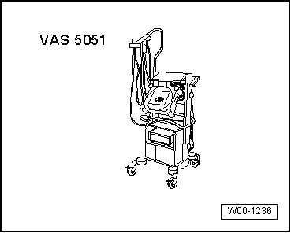
• Adapter (T10157/1)
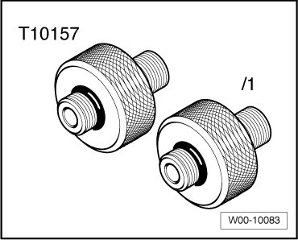
• Air spring filler unit (VAS 6231)
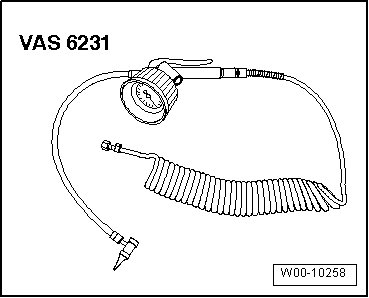
• Ring spanner insert AF 21 (T10212)
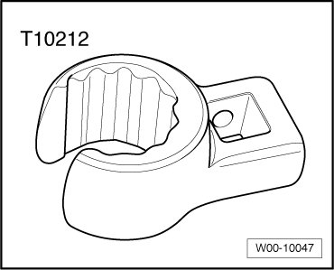
• Assembly tool (T10301)
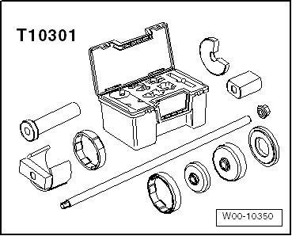
• Ring spanner insert AF 21 (T10158/1)
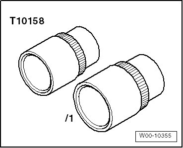
• Spring compressor (VAS 6046)
• Spring holder (VAS 6046/3)
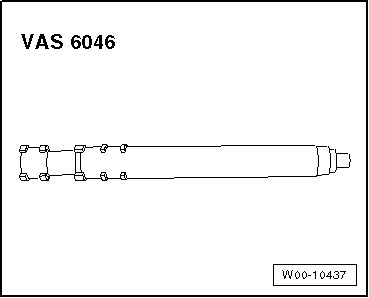
• Circlip pliers (VW 161 A)
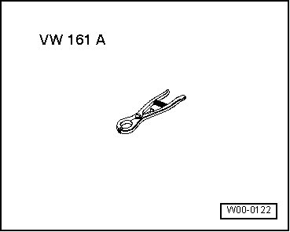
• CV joint boot clamp tool (VAG 1682)
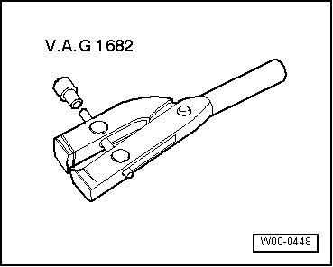
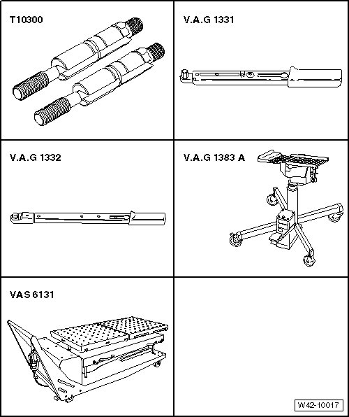
Special tools, testers and auxiliary items required
• Locating pins (T10300)
• Torque wrench (VAG 1332)
• Torque wrench (VAG 1331)
• Engine and transmission jack (VAG 1383 A) or
• Scissor lift table (VAS 6131)
• Support (2x) (VAS 6131/6-5)
• Support (2x) (VAS 6131/6-7)
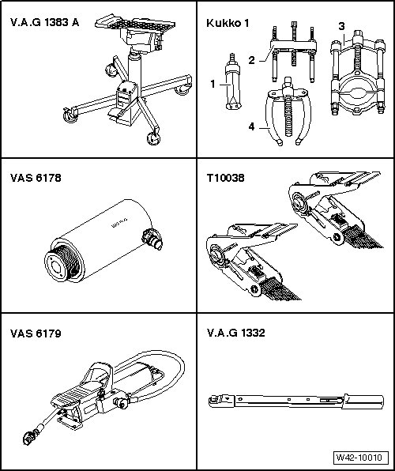
Special tools, testers and auxiliary items required
• Engine and transmission jack (VAG 1383 A)
• Kukko support (Kukko 22-2) - 4 -
• Kukko extractor (Kukko 21/4) - 1 -
• Kukko separating tool (Kukko 15-2) - 3 -
• Separating tool (Kukko 15/3)- 3 -
• Hydraulic press (VAS 6178) with pressure head (T10205/13)
• Tensioning strap (T10038)
• Hollow piston cylinder (VAS 6179)
• Pressure gauge w/connection (VAS 6179/1), not depicted
• Torque wrench (VAG 1332)
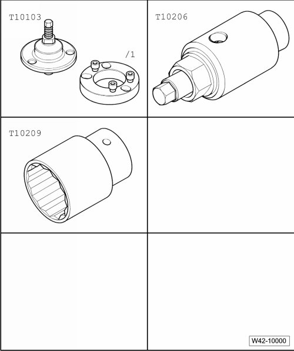
Special tools, testers and auxiliary items required
• Adapter plate (T10103/1)
• Seating tool (T10206)
• Socket, nominal size 32 mm (T10209)